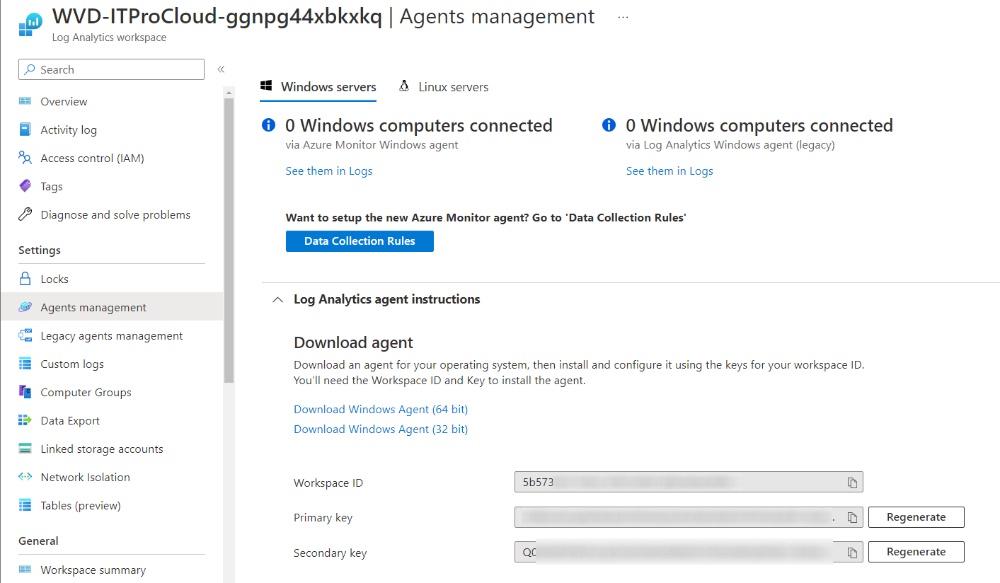
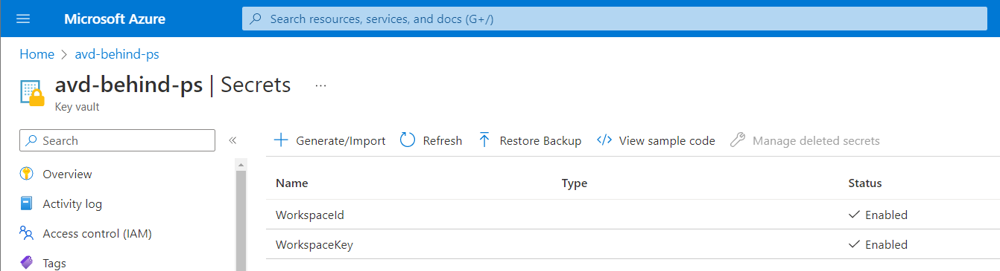
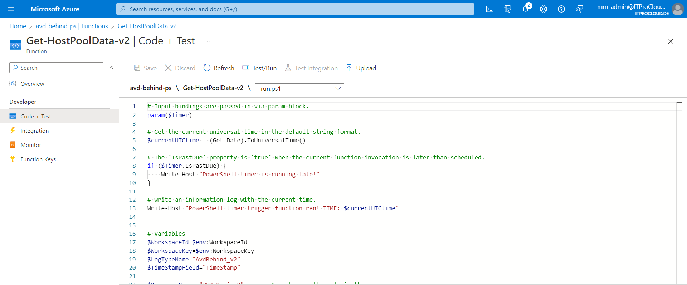
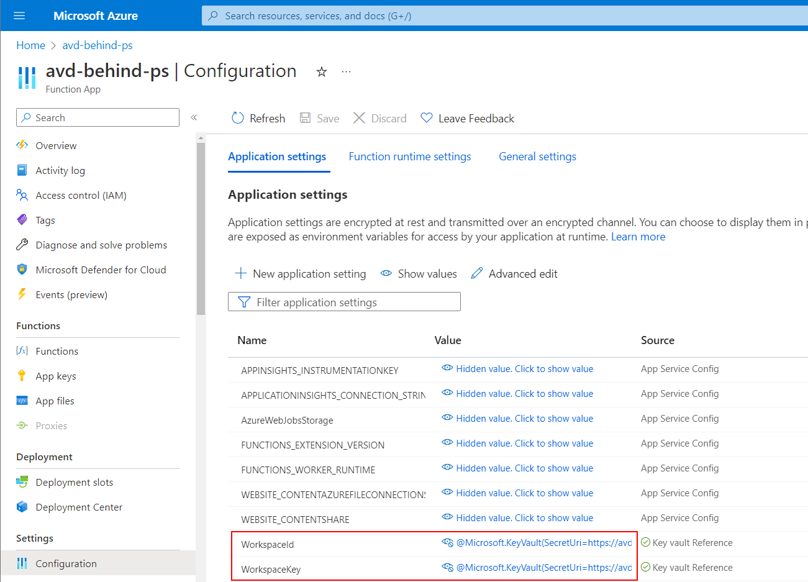
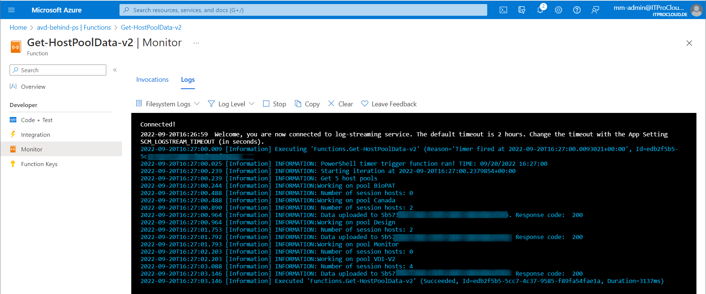
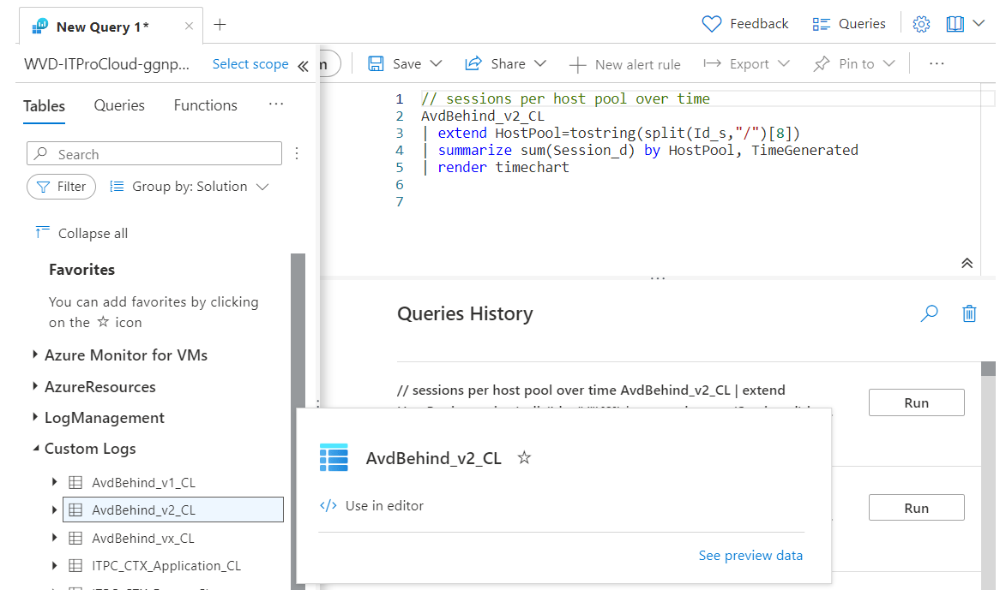
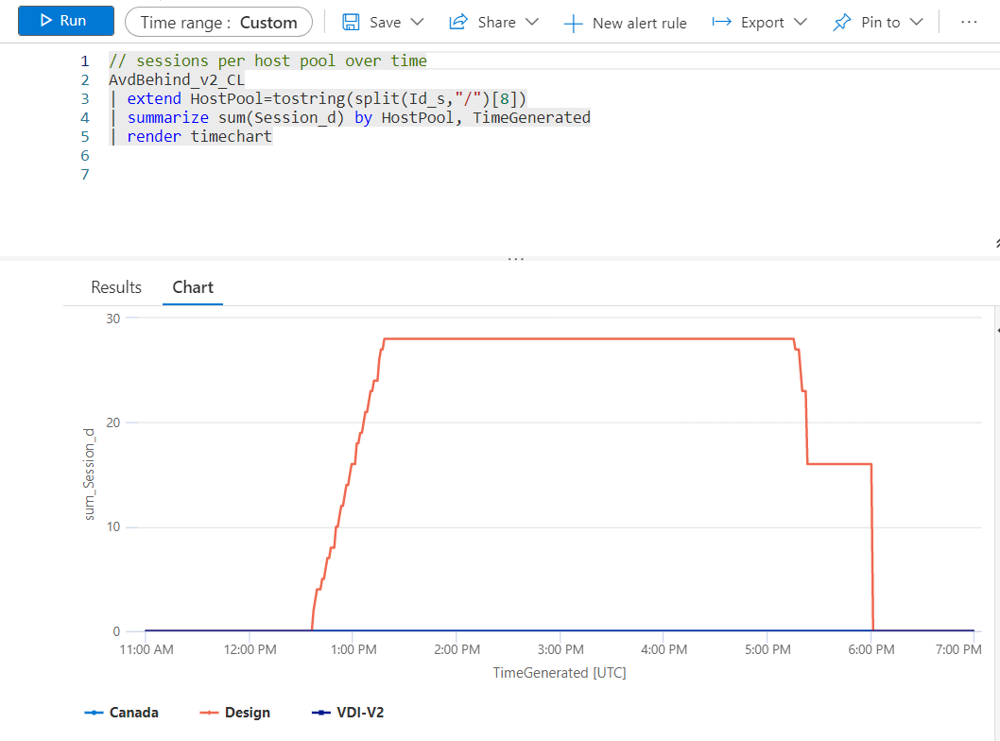
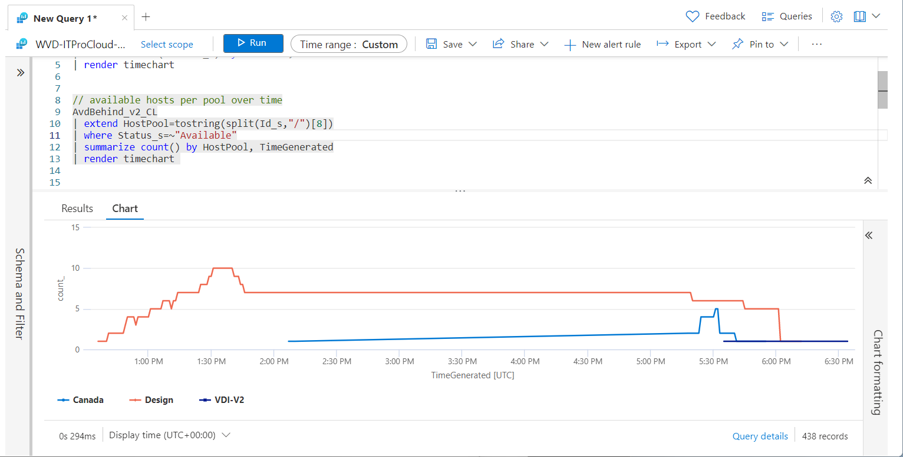
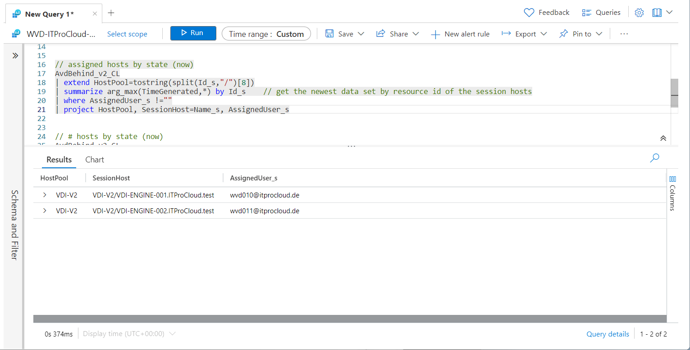
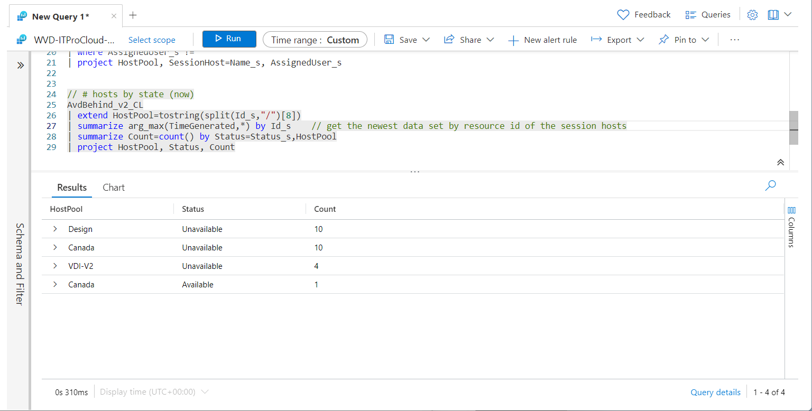

Azure Virtual Desktop: Logging session host state to Log Analytics to show state and sessions over time

Update October 2022: Check out the following Workbook to use diagnostic logging to get and visualize the data
I had some presentations over the last weeks where I showed how to create images with PowerShell and how to deploy these images as new session hosts - also with PowerShell. Additionally, I showed how to log the state of the Azure Virtual Desktop session hosts each minute to a log analytics workspace. This post covers the why and how.
Today, you can manage Azure Virtual Desktop differently (Portal, PowerShell, WVDAdmin, Hydra for AVD, etc.). Also, monitoring is covered using Azure Monitor and the Diagnostic Logging, and my free Workbook. But some parts are missing regarding monitoring: If you want to show available hosts and sessions over time (e.g., for the last month), you have no native solution. Also, the state of a specific host at any time would be interesting to find issues in the past.
But it's easy to solve. You can do the following steps with PowerShell to store this data in a Log Analytics workspace:
Each minute: - Query all host pools in a resource group - Read the session hosts objects of each pool - Extend a property to the session hosts with the current timestamp (do not rely on the generated timestamp to later group the hosts in time) - Upload the data to Log Analytics
The most efficient and economical way is to use an Azure Function. The function can be used to trigger the script each minute. To do it more professional, we can build this solution with a few Azure resources: - Azure Function for the PowerShell script - Azure Key Vault to store the Log Analytics workspace id and key - A new or existing Log Analytics workspace
Create or select a Log Analytics workspace
You can create a new Log Analytics workspace to store the data or you can use an existing one. If you have done this, copy the WorkspaceId and WorkspaceKey (primary key) for later use (can be found in Agents Management -> Log Analytics agent instructions).

Create an Azure Key Vault
Create a standard Key Vault and add two secrets to the vault: - WorkspaceId, containing the WorkspaceId of the Log Analytics workspace - WorkspaceKey, containing the WorkspaceKey of the Log Analytics workspace

Configuring the Azure Function
Rollout a new Azure Function with a consumption plan (or an existing App Service Plan). Open the function -> Identity and set the "System assigned" identity to on. This creates immediatily an identity for the Azure Function to give the Function permission to access the Key Vault and the Host Pool/resource group containing the host pools.
In functions, select create -> Time Trigger and set the time trigger to "*/60 * * * * *" to run the script each minute. Give the function a good name. In "code", insert the content of run.ps1. Modify line 28 and insert the name of the resource group of your host pools.

In the Function -> App Files, copy the content from https://gist.github.com/MarcelMeurer/8347eb527a6fdb4839ee428bf0e6eee0 to the files "requierements.psd1" and "profile.ps1". That is needed to load the Azure modules of AVD and the authentication with the managed identity.
Finally, open configuration in the Azure Function, and create new application settings:
- WorkspaceId: @Microsoft.KeyVault(SecretUri=https://xxxx.vault.azure.net/secrets/WorkspaceId/)
- WorkspaceKey: @Microsoft.KeyVault(SecretUri=https://xxxx.vault.azure.net/secrets/WorkspaceKey/)
Use the correct URL to reflect the correct Key Vault

Do give the Azure Function permission to read the secrets, open the Key Vault again and go to: Access configuration -> Go to access policies and create new permission with "Secret Get" for the identity of the function (use the name of the function to find the identity).
Go to the resource group containing your host pools -> Access Control -> Add role assignment: Add the role "Desktop Virtualization Host Pool Reader" for the member "Managed Identity" and the name of the Azure Function.
If everything is working fine, the first data are written to the Log Analytics workspace. You can check the output of the function in Monitor:

It takes one time a couple of minutes to build the data schema in Log Analytics. After that, a new table is shown in Logs:

To start showing some data, we can run the following Kusto queries to show the data:
   
Queries
// sessions per host pool over time
AvdBehind_v2_CL
| extend HostPool=tostring(split(Id_s,"/")[8])
| summarize sum(Session_d) by HostPool, TimeGenerated
| render timechart
// available hosts per pool over time
AvdBehind_v2_CL
| extend HostPool=tostring(split(Id_s,"/")[8])
| where Status_s=~"Available"
| summarize count() by HostPool, TimeGenerated
| render timechart
// assigned hosts by state (now)
AvdBehind_v2_CL
| extend HostPool=tostring(split(Id_s,"/")[8])
| summarize arg_max(TimeGenerated,*) by Id_s // get the newest data set by resource id of the session hosts
| where AssignedUser_s !=""
| project HostPool, SessionHost=Name_s, AssignedUser_s
// # hosts by state (now)
AvdBehind_v2_CL
| extend HostPool=tostring(split(Id_s,"/")[8])
| summarize arg_max(TimeGenerated,*) by Id_s // get the newest data set by resource id of the session hosts
| summarize Count=count() by Status=Status_s,HostPool
| project HostPool, Status, Count
Let me know if everything is working as expected or if it makes sense to create a "Deploy to Azure Button" to deploy the solution.